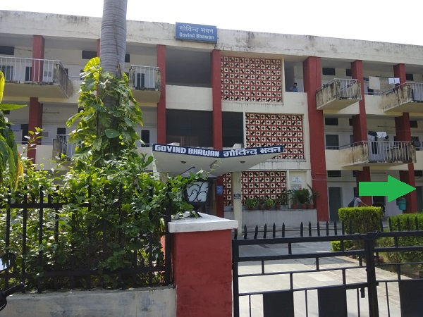

|

|
About
Govind Bhawan is one of the oldest hostels in the campus with its foundation stone
laid by Shrimati Durgabhai Deshmukh ,Chairman ,Social Welfare Board on 25th April,1957, and
subsequently opened by Shri Hafiz Muhammed Ibrahim,Union Minister of Irrigation and Power on April 16,1958.
It currently has 636 single rooms. Out of these, 578 rooms are occupied, 2 are guest rooms and rest are empty.
Govind Bhawan has been named after the renowned freedom fighter Pandit Govind Ballabh Pant. Govind Ballabh Pant was born on September 10, 1887 in Khut village of Shyahi Devi hills in District Almora. His mother's name was Govindi. His father, Manorath Pant, was constantly on the road. Govind was brought up by his grandfather, Bandri Dutt Joshi, who played a significant part in moulding his political views.
|